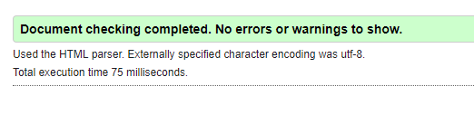

Harjoitustyönä oli oman portfolion rakentaminen ja omani löytyy nyt täältä
Teen henkilökohtaisen sivuston, jonka tarkoituksena on toimia sekä Web-kurssin lopputyönä, mutta myös apuna harjoittelupaikan hakemisessa. Tämän sivuston avulla voin näyttää mahdolliselle tulevalle harjoittelupaikan rekrytoijalle osaamistani helposti lähestyttävällä tavalla. Sivustolle on tarkoituksena laittaa aiempaa työkokemusta, mutta myös työnäytteitä, ”esimerkkejä”, eri kursseilla tekemistäni töistä. Tällä tavalla sivu toimii sekä CV:nä että työnäytteiden julkaisukanavana. Päivitän sivustoa sitä mukaa kun saan uusia kursseja suoritettua. Tietenkään ei ole tarkoituksenmukaista tehdä kaikista kursseista esittelyä ja valikoinkin kurssit enimmäkseen oman alan ammattiopinnoista. Esimerkkinä nyt vaikka tämä meneillään oleva Web-tekniikat- kurssi, ohjelmoinnin perusteet- kurssi ja elektroniikan kurssi. Kaikki sivustolla käytettävät kuvat ovat omia kuviani.
Haluan tehdä sivuistani responsiiviset, vaikkakin on todennäköistä, että mahdollinen käyttäjä katsoo näitä isohkolta näytöltä työpaikalla. Toki on nimittäin mahdollista, että käyttäjä tekeekin vaikkapa etätöitä juuri sinä päivänä, kun hän avaa sivustoni ja on tekemässä sen pienemmällä näytöllä, vaikkapa kannettavalla tietokoneella. Tämän lisäksi haluan, että sivuni ovat luettavat myös puhelimen näytöltä. Mahdollinen tuleva työnantaja/rekrytoija pystyy näin myös heti huomaamaan osaamistani, ja saattaa jopa testata sivuston avulla, olenko osannut huomioida eri kokoiset näytöt työssäni. Julkaisen sivun Github-sivuillani, jonne on tarkoituksena muutenkin kerätä työnäytteitä. Tämä antaa mahdolliselle työantajalle myös hyvän kuvan siitä, että hallitsen Githubin käytön. Käytän työssäni omia kuvakaappauksia mm. Yenkasta ja CodeBlocksista.
näitä voi siis olla useampi alekkain.
Esimerkiksi:
Alaosan footeriin vielä yhteystiedot. Tähän harjoitustyöhöni en laita puhelinnumeroa näkyville, mutta jos lähetän tämän työnhakumielessä jollekin, niin siinä vaiheessa lisään yhteystietoihin vielä numeroni.
Tämä kaikki on tarkoitus laittaa siis samalle sivulle, koska haluan asioiden olevan lyhyesti ja ytimekkäästi esitettynä. Uskon myös, ettei esimerkiksi rekrytoijilla ole aina aikaa klikkailla montaa eri sivua näkyville ja siksikin koen tämän hyvänä ratkaisuna.
Tässä on layout-hahmotelma portfolio-sivustani. Käytin tekemiseen apuna Ninjamock-työkalua.
Turvallinen suunnitteluala on huomioitu niin, että käytän koko sivustolla border-box-määritystä. Sivusto tulee muutenkin olemaan kokonaan responsiivinen ja skaalautuva. Mitat ja määritykset tehdään suhteellisilla mitoilla. Väritehosteena käytän layout-hahmotelmassakin näkyvää sinistä #087ED9. Fonttina käytän europa-fonttia.
Käytin testauksessa apuna browserstack.com palvelua, jonka avulla voi testata sivuston näkyvyyttä eri selaimilla ja laitteilla. Käytin vain ilmaista kokeilujaksoa, joten en saanut kaikkia mahdollisia testausoptioita käyttööni, mutta kuitenkin hyvän määrän alkuunpääsemiseksi. Testasin sivustoa palvelussa Firefoxilla, Edge 18:lla ja Cromella, ja näissä kaikissa sivusto näkyi kuten pitikin. Lisäksi testasin Ipad Air2:lla Safari-selaimella ja tässä myös kaikki näkyi kuten piti. Puhelimista testasin Iphone 6S:n ja Samsung Galaxy S7:n. Näissä kaikki muu näkyi kuten piti, mutta automaatiotekniikka sana venyi osittain laatikon ulkopuolelle. Tämän olin huomannut jo testatessani sivustoa omalla koneella ja eri selaimilla pienentäen näyttöä. Testasin tähän ratkaisuksi muun muuassa vw-mittoja, mutta en saanut niitä toimimaan halutulla tavalla. Opettajan ehdotuksesta lyhensinkin sitten koko otsikkoa, jolloin se näkyy kokonaan.
Yleissuunnitelu alkoi jo oikeastaan kurssin kanssa yhtäaikaa. Huomasin pohtivani asiaa jo alusta lähtien ja miettiväni eri vaihtoehtoja. Kun kurssin alkupuolella opin tekmään sivuston, missä on useita alasivuja, olin varma, että haluan tehdä lopputyöhöni myös useita sivuja. Mielessäni vilisivät ajatukset siitä, miten paljon asioita saisinkaan mahtumaan sivuille ja mitä kaikkea niillä voisi kertoa. Tarkemmin kun aloin asiaa sitten miettimään, ajattelin, että tässä informaatiopaljoudessa olisikin varmasti viisainta tehdä suhteellisen yksinkertaiset ja ytimekkäät sivut. Niin että asiat tulisivat esiin, mutta ilman jaaritteluja. Tällä yrittäisin varmistaa myös sen, että sivuille tullut jaksaa lukea ne myös läpi asti. Tarkoituksena ei kuitenkaan ole kertoa elämäntarinaansa, vaan saada mahdolliset rekrytoijat kiinnostumaan minusta tulevana työntekijänä.
Tähän vaiheeseen meni kokonaisuudesta varmaankin eniten aikaa. Selailin paljon nettiä ja etsin hyviä ja itseäni miellyttäviä elementtejä muilta sivustoilta. Lopulta päätin luottaa värin voimaan ja suunnittelin sivuille kaksi sinistä elementtiä. Itse toteutus vei myös aikaa, koska jouduin etsimään monestakin asiasta lisätietoa osatakseni tehdä sivustani sellaiset kuin halusin. Esimerkiksi halusin laatikoiden olevan samankokoisia vaikka sisältö olikin eri mittainen. Haastetta oli myös siinä, että sain kolme ensimmäistä laatikkoa sinisen osuuden päälle ja footerin tekstin läpinäkyväksi. Pidin näistä haasteista, koska näin opin sekä tiedonhakua että myös uusia asioita.
Sisällön tekeminen itsessään oli melko helppoa, koska olin jo sunnittellut mitä mihinkin laatikkoon kirjoitetaan. Kurssikuvaukset vaativat vähän enemmän aikaa, koska en aluksi tiennyt miten laajasti haluan kustakin kurssista kertoa.
Validaattori antoi seuraavanlaisen raportin. Tämä ei siis johtanut toimenpiteisiin.
Ajattelin aluksi dokumentoinnin olevan välttämätön paha, mutta muutinkin mieltäni kun huomasin, miten mukava raporttia olikaan tehdä. Ymmärsin senkin olevan uusi mahdollisuus harjoitella vielä opittuja asioita. Eri välivaiheet työstäni laitoin aina päivän pääteeksi githubiin, josta pystyy palaamaan edelliseen versioon, jos muuttaakin mieltänsä myöhemmin. Tätä kautta myös tyäön välivaiheet tulivat dokumentoitua.
Omasta mielestäni harjoitustyön tekeminen nivoi hienosti yhteen kurssilla opitut asiat. Lisäksi oli mahdollisuus opetella vaikka miten paljon lisää omaehtoisesti työtä tehdessä. Pidin myös siitä, että työ antoi varmuutta tiedonhakemiseen ja sen soveltamiseen omassa työssään.
Itse olen tyytyväinen sivuuni. Ulkoasu on raikas ja simppeli. Asiat tulevat esitettyä lyhyesti ja ytimekkäästi ja esitetyt asiat ovat sellaisia, jotka mahdollisesti kiinnostavat rekrytoijia. Yhteystiedot löytyvät kahdesta kohtaa sivustolta. Responsiivisuus toimii hyvin. Suunnittelu ja raportti ovat kattavia ja käsittelevät kaikki vaatimuksissa toivotut asiat. Kokonaisarvosanaehdotus on täten 5.